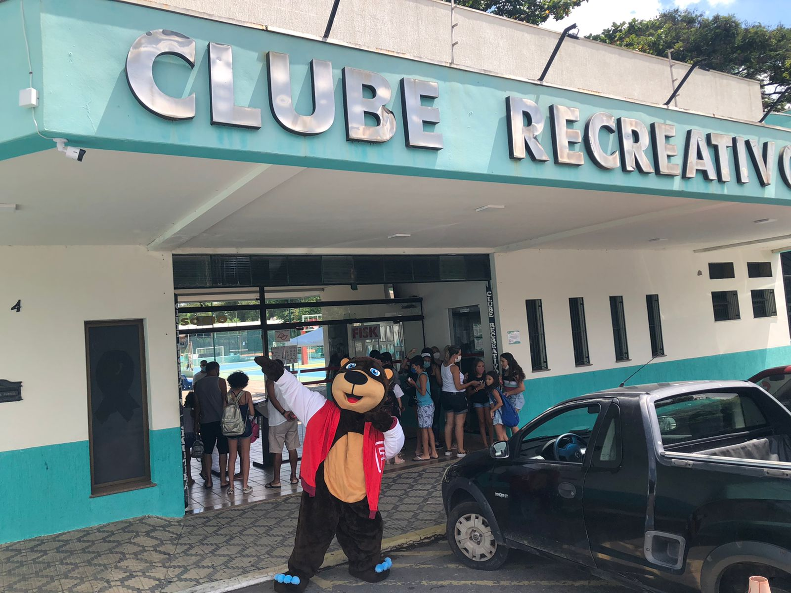
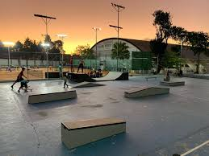
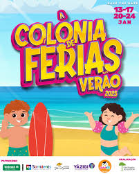
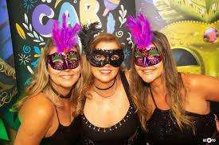
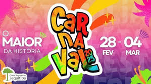
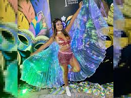

O Clube Recreativo Jequitibá é uma instituição localizada em Caçapava, São Paulo, dedicada ao esporte, lazer e entretenimento de suas famílias associadas.
Esportes
O Clube Recreativo Jequitibá oferece uma variedade de atividades esportivas para seus associados, como quadras para futebol, tênis, vôlei, basquete e piscinas de natação.
Espaço para Eventos
O clube conta com salões para eventos sociais e corporativos, sendo uma opção popular para casamentos, festas e encontros de negócios.

Área de Lazer
A área de lazer do Clube Recreativo Jequitibá é um dos principais atrativos para seus associados,
oferecendo diversas opções para diversão e relaxamento. Entre os espaços e atividades que a área de lazer oferece, destacam-se as
piscinas, espaços ao ar livre, espaços para churrasco, lugar para eventos e festas, área infantil e parques.

Programação Cultural e Social
O Clube Recreativo Jequitibá também oferece uma ampla gama de opções de lazer e entretenimento para seus associados e suas famílias. Algumas atividades e espaços que podem ser encontrados no clube
são eventos sociais e culturais, como bailes, festas temáticas e shows, além de confraternizações, caminhadas e salas de convivência.

Programação de Carnaval
O Clube Recreativo Jequitibá em Caçapava, São Paulo, preparou uma programação especial para o Carnaval de 2025. De 28 de fevereiro a 4 de março, os associados e visitantes puderam desfrutar de cinco dias de muita folia, com eventos diurnos e noturnos.
A programação será realizada de 28 de fevereiro a 4 de março de 2025, oferecendo uma vasta gama de atrações para todos os públicos. Durante esses cinco dias de folia, o clube terá eventos imperdíveis para quem quer aproveitar o Carnaval com muito entretenimento e diversão.

A programação noturna acontecerá das 22h às 4h, com grandes shows e animação para os adultos. No 28 de fevereiro, o evento contará com o Bloco Donnaflô, além do Pagode dos Gigantes e DJs como Nathan e Kastro. No dia 1º de março, o evento “CarnaFolia” trará a Banda TokFolia e mais uma vez os DJs Nathan e Kastro, além do Projeto Tirando Onda e André Marinho no palco da piscina.
Já no dia 2 de março, o clube promove o tradicional Baile de Máscaras e Fantasias, com shows da Banda TokFolia e DJ Kastro, além da presença de Kaique & Luan e Banda 9Volts no palco da piscina. No dia 3 de março, será realizado o Encontro dos Blocos, com atrações como a Banda TokFolia, a Bateria Fúria Negra e o Misturadinho do Junião. O Baile Tradicional, que encerrará a programação no dia 4 de março, contará com a Banda TokFolia e os DJs Kastro e Nathan.

Para as famílias e as crianças, o clube também preparou uma programação diurna imperdível. Durante as matinês, que acontecerão nos dias 29 de fevereiro, 1º, 2 e 3 de março, o público poderá se divertir com a Banda TropFolia no dia 29 de fevereiro, além dos DJs Kush, Alex, MD e Everton Guedes nos dias seguintes.
Além disso, o evento contará com uma Área Kids superdivertida, cheia de brinquedos para as crianças se divertirem. Para tornar a experiência ainda mais animada, o clube realizará concursos de fantasias para adultos e crianças, incentivando a criatividade e a participação de todos.
